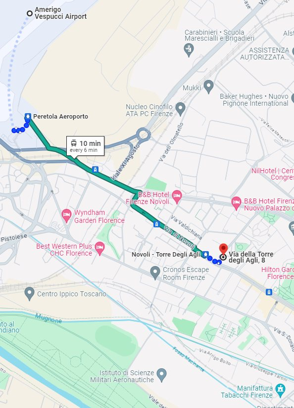
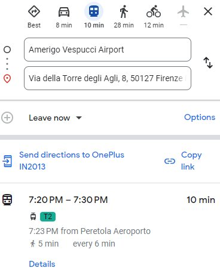
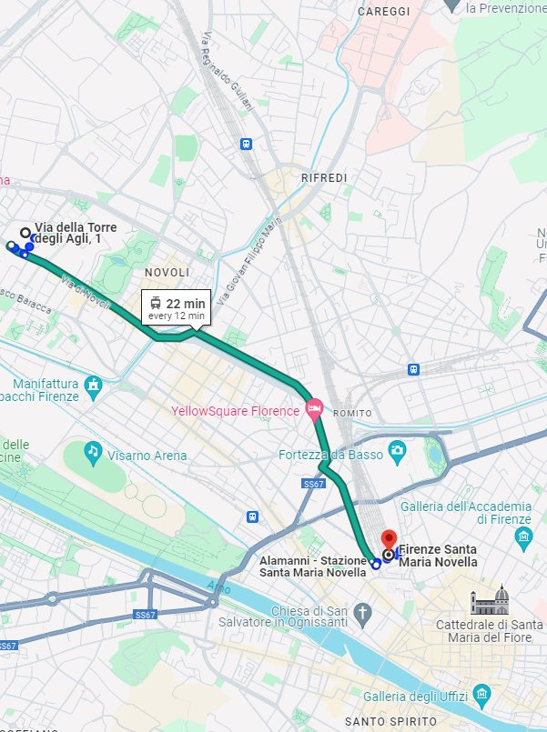
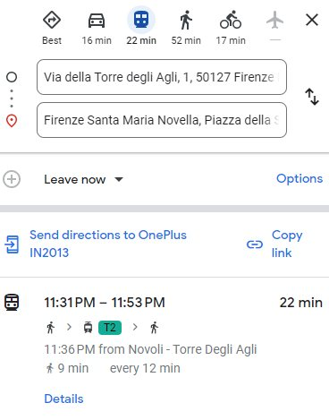
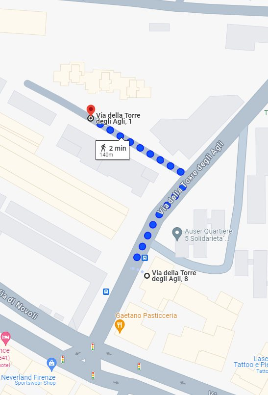

Getting to the apartment
Below you can find the information on how to get to the apartment. See the Public transport section for how to reach the city centre and other places.
In short
- The apartment is a 2-minute walk from the Novoli – Torre degli Agli tram stop, on the T2 line that links Florence airport with the city centre and Santa Maria Novella train station.
- 10 minutes to the airport.
- 19 minutes to Santa Maria Novella train station.
- 19 minutes to the city centre.
From Florence Airport
- Take Tram T2 from the Peretola Aeroporto stop, just outside Amerigo Vespucci Airport, direction Unità. Get off at Novoli – Torre degli Agli: it is a 10-minute ride, with trams every 6 minutes. From the tram stop it is a 2-minute walk to the apartment.


From Santa Maria Novella train station
- From the Unità tram stop, next to Santa Maria Novella station, take Tram T2 and get off at Novoli – Torre degli Agli. The ride takes about 19 minutes, with trams every 6 minutes. From the tram stop it is a 2-minute walk to the apartment.


From Pisa Airport
- From Pisa Airport take the Pisa Mover (just outside, on the left) to Pisa Centrale train station. There, take a train to Firenze Santa Maria Novella: about 1 hour 15 minutes.
- Alternatively, take a bus directly from the airport to Florence's central bus station, very close to Santa Maria Novella: about 1 hour 45 minutes.
- Once in Florence, take Tram T2 from Unità and get off at Novoli – Torre degli Agli (about 19 minutes). From the tram stop it is a 2-minute walk to the apartment.
By car
- Free public parking is available in Via della Torre degli Agli and the surrounding streets. Spaces are subject to availability and may be scarce at peak hours; always check the signs for restrictions. You can usually find a spot in the parking area at the beginning of the street (Via della Torre degli Agli 1).

Come arrivare
Di seguito trovi le informazioni per raggiungere l'appartamento. Per il centro storico e gli altri luoghi d'interesse vedi la sezione Trasporti pubblici.
In breve
- L'appartamento è a 2 minuti a piedi dalla fermata del tram Novoli – Torre degli Agli, sulla linea T2 che collega l'aeroporto di Firenze al centro città e alla stazione di Santa Maria Novella.
- 10 minuti per l'aeroporto.
- 19 minuti per la stazione di Santa Maria Novella.
- 19 minuti per il centro città.
Dall'aeroporto di Firenze
- Prendi il Tram T2 dalla fermata Peretola Aeroporto, appena fuori dall'aeroporto Amerigo Vespucci, direzione Unità. Scendi a Novoli – Torre degli Agli: il viaggio dura 10 minuti, con tram ogni 6 minuti. Dalla fermata, 2 minuti a piedi e sei a casa.
Dalla stazione di Santa Maria Novella
- Dalla fermata del tram Unità, accanto alla stazione di Santa Maria Novella, prendi il Tram T2 e scendi a Novoli – Torre degli Agli. Il viaggio dura circa 19 minuti, con tram ogni 6 minuti. Dalla fermata, 2 minuti a piedi e sei a casa.
Dall'aeroporto di Pisa
- Dall'aeroporto di Pisa prendi il Pisa Mover (appena fuori, sulla sinistra) fino alla stazione di Pisa Centrale. Da lì, un treno per Firenze Santa Maria Novella: circa 1 ora e 15 minuti.
- In alternativa, un autobus diretto dall'aeroporto alla stazione centrale degli autobus di Firenze, vicinissima a Santa Maria Novella: circa 1 ora e 45 minuti.
- Arrivato a Firenze, prendi il Tram T2 da Unità e scendi a Novoli – Torre degli Agli (circa 19 minuti). Dalla fermata, 2 minuti a piedi e sei a casa.
In auto
- In Via della Torre degli Agli e nelle strade vicine c'è parcheggio pubblico gratuito. I posti sono soggetti a disponibilità e possono scarseggiare nelle ore di punta; controlla sempre la segnaletica. Di solito si trova posto nel piazzale all'inizio della via (Via della Torre degli Agli 1).
Cómo llegar
A continuación encontrarás la información para llegar al apartamento. Para el centro histórico y otros lugares de interés, consulta la sección Transporte público.
En resumen
- El apartamento está a 2 minutos a pie de la parada de tranvía Novoli – Torre degli Agli, en la línea T2 que conecta el aeropuerto de Florencia con el centro de la ciudad y la estación de Santa Maria Novella.
- 10 minutos al aeropuerto.
- 19 minutos a la estación de Santa Maria Novella.
- 19 minutos al centro de la ciudad.
Desde el aeropuerto de Florencia
- Toma el Tranvía T2 en la parada Peretola Aeroporto, justo fuera del aeropuerto Amerigo Vespucci, dirección Unità. Baja en Novoli – Torre degli Agli: el trayecto dura 10 minutos, con tranvías cada 6 minutos. Desde la parada, 2 minutos a pie hasta el apartamento.
Desde la estación de Santa Maria Novella
- Desde la parada de tranvía Unità, junto a la estación de Santa Maria Novella, toma el Tranvía T2 y baja en Novoli – Torre degli Agli. El trayecto dura unos 19 minutos, con tranvías cada 6 minutos. Desde la parada, 2 minutos a pie hasta el apartamento.
Desde el aeropuerto de Pisa
- Desde el aeropuerto de Pisa toma el Pisa Mover (justo fuera, a la izquierda) hasta la estación Pisa Centrale. Allí, toma un tren hacia Firenze Santa Maria Novella: aproximadamente 1 hora y 15 minutos.
- Alternativamente, un autobús directo desde el aeropuerto hasta la estación central de autobuses de Florencia, muy cerca de Santa Maria Novella: aproximadamente 1 hora y 45 minutos.
- Una vez en Florencia, toma el Tranvía T2 desde Unità y baja en Novoli – Torre degli Agli (unos 19 minutos). Desde la parada, 2 minutos a pie hasta el apartamento.
En coche
- En Via della Torre degli Agli y en las calles cercanas hay aparcamiento público gratuito. Las plazas están sujetas a disponibilidad y pueden escasear en horas punta; comprueba siempre las señales. Normalmente se encuentra sitio en la explanada al inicio de la calle (Via della Torre degli Agli 1).